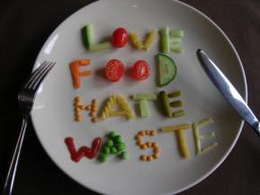

We should save food
This is because that when we waste food, we waste the labour, effort, investment and precious resources (like water, seeds, feed, etc.) that go into producing it, not to mention the resources that go into transporting and processing it. In short, wasting food increases greenhouse gas emissions and contributes to climate change.
Therefore, we should not waste food.
Whenever when I am at home, I always finish my food and check my parents if they finish their food or not. When I'm at school, I always finish my food.